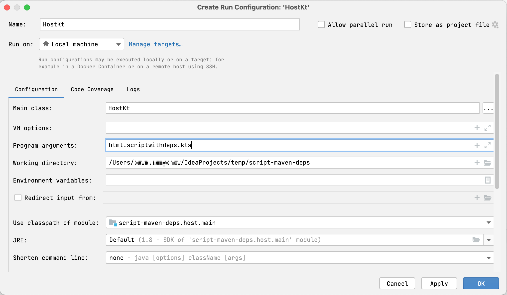

Get started with Kotlin custom scripting – tutorial
Kotlin scripting is the technology that enables executing Kotlin code as scripts without prior compilation or packaging into executables.
For an overview of Kotlin scripting with examples, check out the talk Implementing the Gradle Kotlin DSL by Rodrigo Oliveira from KotlinConf'19.
In this tutorial, you'll create a Kotlin scripting project that executes arbitrary Kotlin code with Maven dependencies. You'll be able to execute scripts like this:
The specified Maven dependency (kotlinx-html-jvm for this example) will be resolved from the specified Maven repository or local cache during execution and used for the rest of the script.
Project structure
A minimal Kotlin custom scripting project contains two parts:
Script definition – a set of parameters and configurations that define how this script type should be recognized, handled, compiled, and executed.
Scripting host – an application or component that handles script compilation and execution – actually running scripts of this type.
With all of this in mind, it's best to split the project into two modules.
Before you start
Download and install the latest version of IntelliJ IDEA.
Create a project
In IntelliJ IDEA, select File | New | Project.
In the panel on the left, select New Project.
Name the new project and change its location if necessary.
From the Language list, select Kotlin.
Select the Gradle build system.
From the JDK list, select the JDK that you want to use in your project.
If the JDK is installed on your computer, but not defined in the IDE, select Add JDK and specify the path to the JDK home directory.
If you don't have the necessary JDK on your computer, select Download JDK.
Select the Kotlin or Gradle language for the Gradle DSL.
Click Create.
Add scripting modules
Now you have an empty Kotlin/JVM Gradle project. Add the required modules, script definition and scripting host:
In IntelliJ IDEA, select File | New | Module.
In the panel on the left, select New Module. This module will be the script definition.
Name the new module and change its location if necessary.
From the Language list, select Java.
Select the Gradle build system and Kotlin for the Gradle DSL if you want to write the build script in Kotlin.
As a module's parent, select the root module.
Click Create.
In the module's build.gradle(.kts) file, remove the version of the Kotlin Gradle plugin. It is already in the root project's build script.
Repeat previous steps one more time to create a module for the scripting host.
First, define the script type: what developers can write in scripts of this type and how it will be handled. In this tutorial, this includes support for the @Repository and @DependsOn annotations in the scripts.
In the script definition module, add the dependencies on the Kotlin scripting components in the dependencies block of build.gradle(.kts). These dependencies provide the APIs you will need for the script definition:
dependencies {
implementation("org.jetbrains.kotlin:kotlin-scripting-common")
implementation("org.jetbrains.kotlin:kotlin-scripting-jvm")
implementation("org.jetbrains.kotlin:kotlin-scripting-dependencies")
implementation("org.jetbrains.kotlin:kotlin-scripting-dependencies-maven")
// coroutines dependency is required for this particular definition
implementation("org.jetbrains.kotlinx:kotlinx-coroutines-core:1.10.1")
}
dependencies {
implementation 'org.jetbrains.kotlin:kotlin-scripting-common'
implementation 'org.jetbrains.kotlin:kotlin-scripting-jvm'
implementation 'org.jetbrains.kotlin:kotlin-scripting-dependencies'
implementation 'org.jetbrains.kotlin:kotlin-scripting-dependencies-maven'
// coroutines dependency is required for this particular definition
implementation 'org.jetbrains.kotlinx:kotlinx-coroutines-core:1.10.1'
}
Create the src/main/kotlin/ directory in the module and add a Kotlin source file, for example, scriptDef.kt.
In scriptDef.kt, create a class. It will be a superclass for scripts of this type, so declare it abstract or open.
// abstract (or open) superclass for scripts of this type
abstract class ScriptWithMavenDeps
This class will also serve as a reference to the script definition later.
To make the class a script definition, mark it with the @KotlinScript annotation. Pass two parameters to the annotation:
fileExtension – a string ending with .kts that defines a file extension for scripts of this type.
compilationConfiguration – a Kotlin class that extends ScriptCompilationConfiguration and defines the compilation specifics for this script definition. You'll create it in the next step.
// @KotlinScript annotation marks a script definition class
@KotlinScript(
// File extension for the script type
fileExtension = "scriptwithdeps.kts",
// Compilation configuration for the script type
compilationConfiguration = ScriptWithMavenDepsConfiguration::class
)
abstract class ScriptWithMavenDeps
object ScriptWithMavenDepsConfiguration: ScriptCompilationConfiguration()
Define the script compilation configuration as shown below.
object ScriptWithMavenDepsConfiguration : ScriptCompilationConfiguration(
{
// Implicit imports for all scripts of this type
defaultImports(DependsOn::class, Repository::class)
jvm {
// Extract the whole classpath from context classloader and use it as dependencies
dependenciesFromCurrentContext(wholeClasspath = true)
}
// Callbacks
refineConfiguration {
// Process specified annotations with the provided handler
onAnnotations(DependsOn::class, Repository::class, handler = ::configureMavenDepsOnAnnotations)
}
}
)
The configureMavenDepsOnAnnotations function is as follows:
// Handler that reconfigures the compilation on the fly
fun configureMavenDepsOnAnnotations(context: ScriptConfigurationRefinementContext): ResultWithDiagnostics<ScriptCompilationConfiguration> {
val annotations = context.collectedData?.get(ScriptCollectedData.collectedAnnotations)?.takeIf { it.isNotEmpty() }
?: return context.compilationConfiguration.asSuccess()
return runBlocking {
resolver.resolveFromScriptSourceAnnotations(annotations)
}.onSuccess {
context.compilationConfiguration.with {
dependencies.append(JvmDependency(it))
}.asSuccess()
}
}
private val resolver = CompoundDependenciesResolver(FileSystemDependenciesResolver(), MavenDependenciesResolver())
Create the src/main/kotlin/ directory in the module and add a Kotlin source file, for example, host.kt.
Define the main function for the application. In its body, check that it has one argument – the path to the script file – and execute the script. You'll define the script execution in a separate function evalFile in the next step. Declare it empty for now.
main can look like this:
fun main(vararg args: String) {
if (args.size != 1) {
println("usage: <app> <script file>")
} else {
val scriptFile = File(args[0])
println("Executing script $scriptFile")
evalFile(scriptFile)
}
}
Define the script evaluation function. This is where you'll use the script definition. Obtain it by calling createJvmCompilationConfigurationFromTemplate with the script definition class as a type parameter. Then call BasicJvmScriptingHost().eval, passing it the script code and its compilation configuration. eval returns an instance of ResultWithDiagnostics, so set it as your function's return type.
fun evalFile(scriptFile: File): ResultWithDiagnostics<EvaluationResult> {
val compilationConfiguration = createJvmCompilationConfigurationFromTemplate<ScriptWithMavenDeps>()
return BasicJvmScriptingHost().eval(scriptFile.toScriptSource(), compilationConfiguration, null)
}
Adjust the main function to print information about the script execution:
fun main(vararg args: String) {
if (args.size != 1) {
println("usage: <app> <script file>")
} else {
val scriptFile = File(args[0])
println("Executing script $scriptFile")
val res = evalFile(scriptFile)
res.reports.forEach {
if (it.severity > ScriptDiagnostic.Severity.DEBUG) {
println(" : ${it.message}" + if (it.exception == null) "" else ": ${it.exception}")
}
}
}
}
It uses functions from the kotlinx-html-jvm library which is referenced in the @DependsOn annotation argument.
Create a run configuration that starts the scripting host and executes this file:
Open host.kt and navigate to the main function. It has a Run gutter icon on the left.
Right-click the gutter icon and select Modify Run Configuration.
In the Create Run Configuration dialog, add the script file name to Program arguments and click OK.

Run the created configuration.
You'll see how the script is executed, resolving the dependency on kotlinx-html-jvm in the specified repository and printing the results of calling its functions:
Resolving dependencies may take some time on the first run. Subsequent runs will complete much faster because they use downloaded dependencies from the local Maven repository.
What's next?
Once you've created a simple Kotlin scripting project, find more information on this topic: